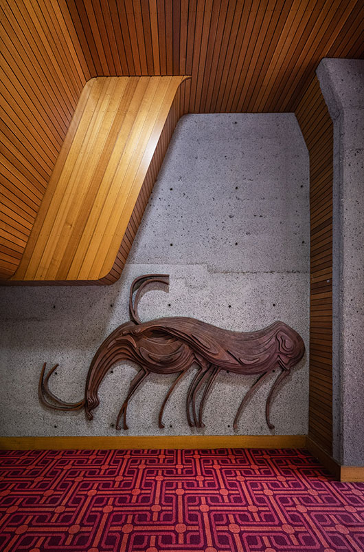

+

Animal sculptures in the lobby of Sydney's Sirius Building by architect Penny Rosier.
Reminiscent of the cave art paintings of Lascaux, Sirius Building Architect Theo (Tao) Gofers calls these sculptures arranged throughout the communal foyer spaces of the building URO's ; unidentified running objects.